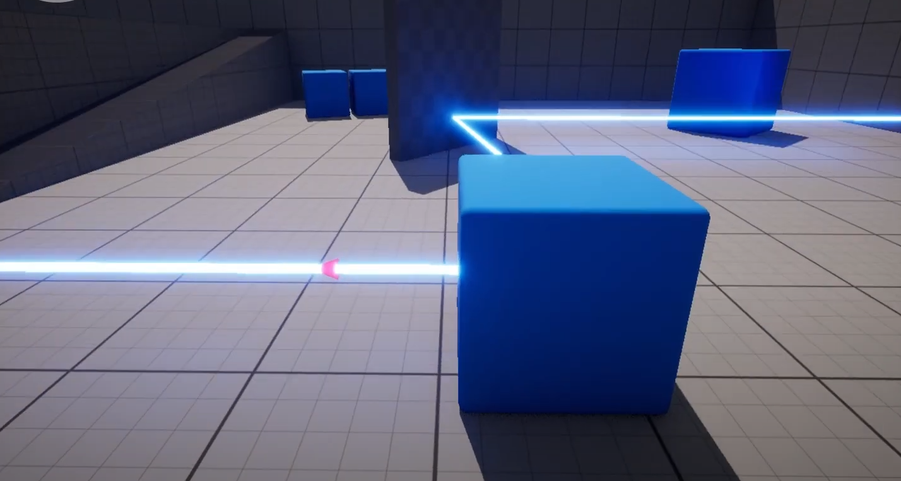
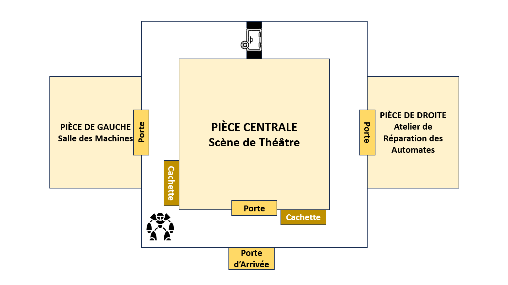
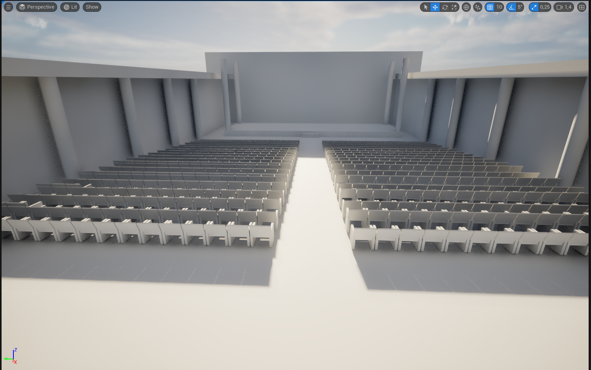
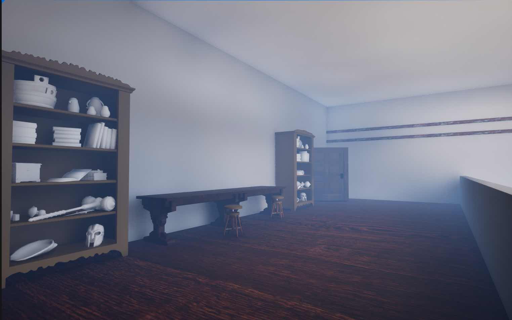
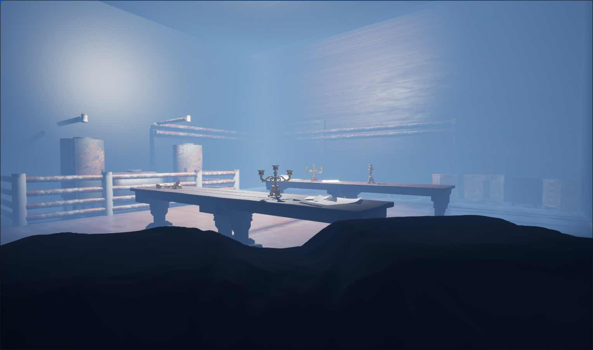

Joseph Merdrignac (jniac)
Ma contribution sur le projet DaVinci
J'ai conçu avec l'aide de Juan les rayons. J'ai aidé Ruben à la conception des pièces afin de pouvoir y placer les énigmes. Pour finir j'ai donc réfléchis à comment placer et faire fonctionner les énigmes même si malheureusement nous n'avons pas pu encore les intégrer.

capture 1

capture 2

capture 3

capture 4

capture 5